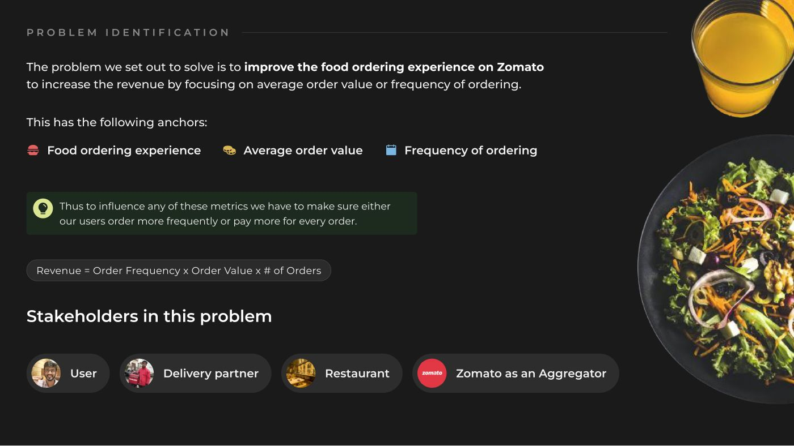
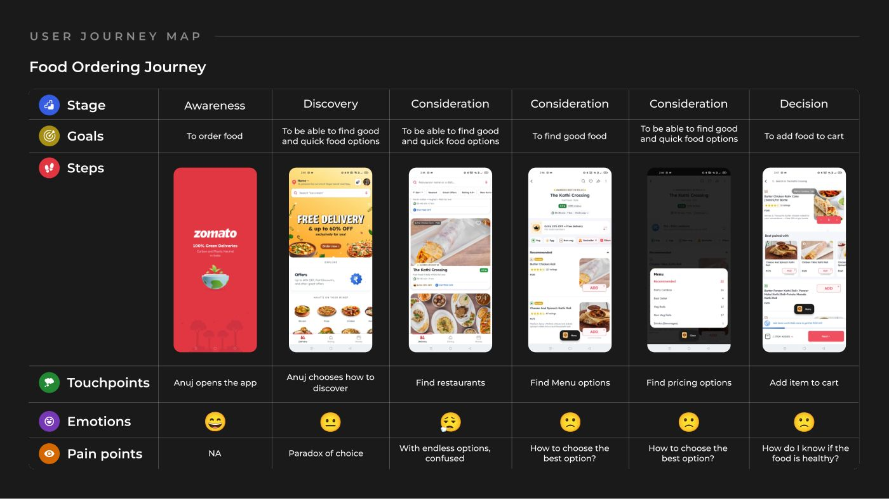
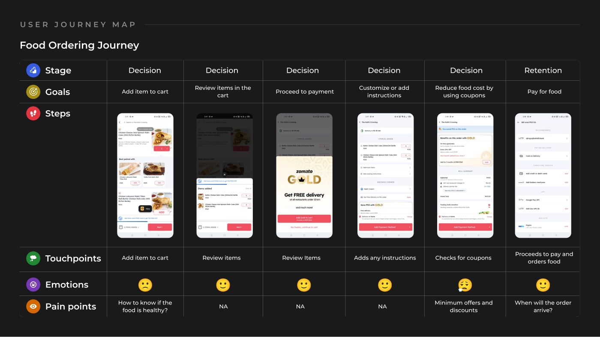
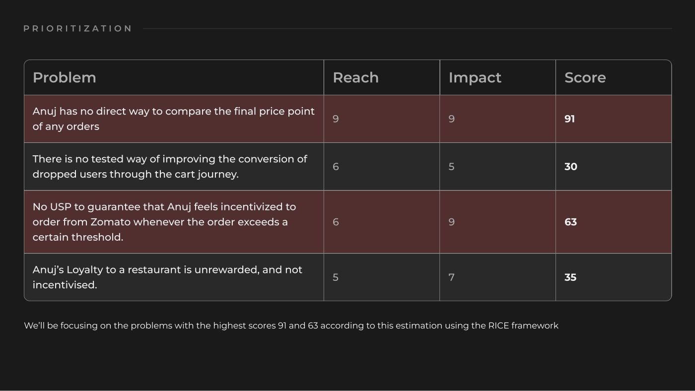
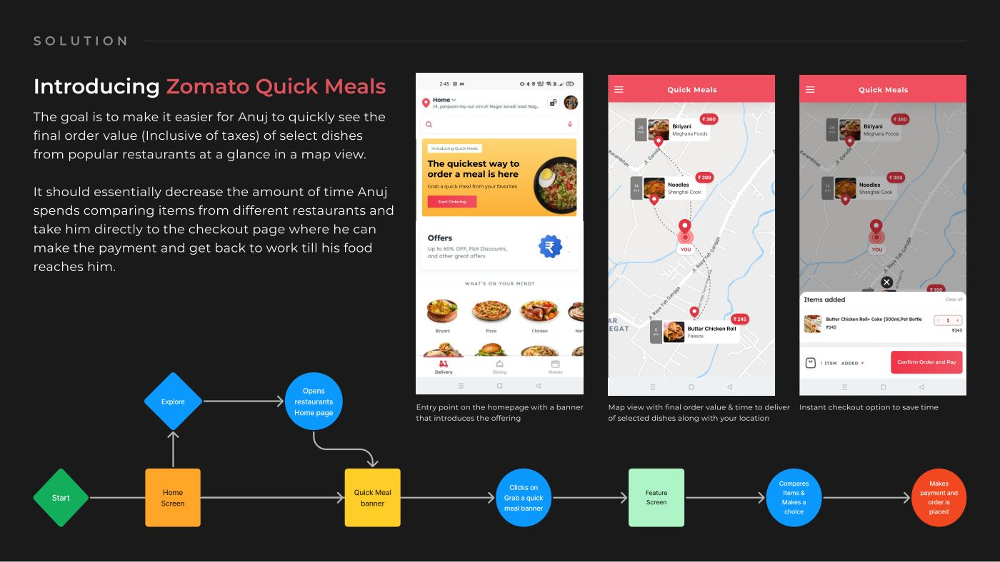
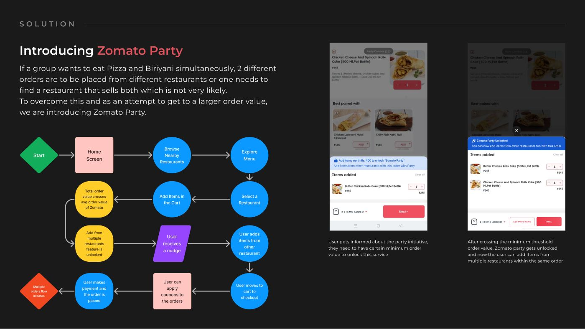
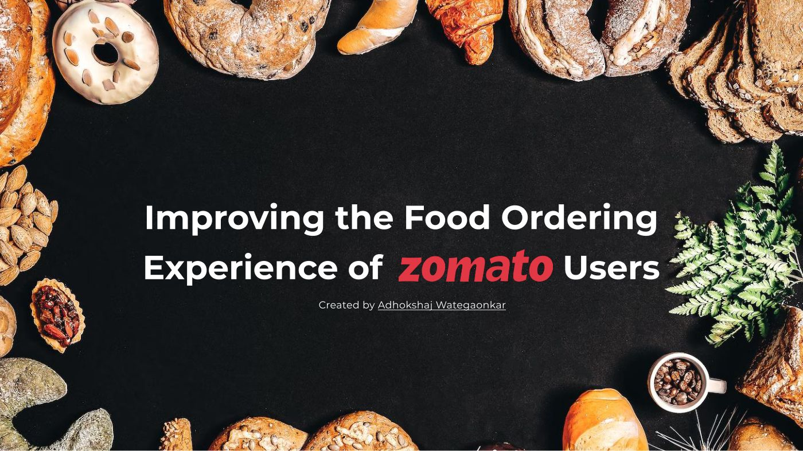

Start by decomposing the metric
The brief — "improve the food ordering experience to increase revenue" — is unactionable as written. Decomposed it becomes tractable:
Revenue = order frequency × order value × number of orders
Which means every candidate solution has to answer one question: does this make users order more often, or pay more per order? Anything that does neither is a UX improvement, not a revenue one — worth doing, but not this brief. That single line is what let me throw out most ideas before designing them.
Four stakeholders sit in the problem — the user, the delivery partner, the restaurant, and Zomato as the aggregator — and a solution that lifts revenue by squeezing one of the middle two isn't a solution, it's a transfer.

The persona, and why he isn't a foodie
Anuj Khandalikar — 26, product manager, Bengaluru. Health-conscious, busy, wants nutritional transparency and reliable delivery, and wants variety without spending time on the decision. His concerns are specific: not enough consistently healthy options, no transparent ingredient information, and a schedule that makes browsing a cost rather than a pleasure.
The useful thing about him is that he is not enjoying the app. He is trying to get lunch and get back to work. For a user like that, time spent in the product is a tax, which is why the engagement metrics are the wrong ones to optimise.
Mapping the journey twice
The ordering journey is long enough that I split it: awareness → discovery → three consideration steps → decision, and then decision → cart → instructions → coupons → payment → retention. Mapping the second half separately is what surfaced the late-stage friction most teardowns skip.
The pain points cluster, and they repeat:
- "Paradox of choice" at discovery — endless options, immediate confusion.
- "How to choose the best option?" at three consecutive consideration steps — restaurant, menu, pricing. The same unanswered question, asked three times.
- "How do I know if the food is healthy?" carrying all the way through the cart.
- "Minimum offers and discounts" and "when will the order arrive?" at the end.
A pain point that survives three consecutive stages isn't friction in a step. It's a missing capability — the user has no way to compare, so they re-ask the same question at every screen that could have answered it.


RICE, and being willing to lose an idea
Four problems, scored on reach and impact:
| Score 91 | No direct way to compare the final price of an order. Reach 9, impact 9. |
|---|---|
| Score 63 | No USP that rewards Anuj for crossing a spend threshold. Reach 6, impact 9. |
| Score 35 | Loyalty to a restaurant is unrewarded. Reach 5, impact 7. |
| Score 30 | No tested way to recover users who drop in the cart journey. Reach 6, impact 5. |
The bottom two are perfectly reasonable product ideas — loyalty programmes and cart recovery are things every marketplace builds. They scored low and they were dropped. Writing down the ideas you didn't pick, with the number that killed them, is what makes a prioritisation defensible six weeks later when someone asks why loyalty isn't on the roadmap.

Solution 1 — Quick Meals, for order frequency
A map view of selected dishes from popular restaurants, each showing its final price inclusive of taxes and its delivery time, with instant checkout. Entry is a homepage banner; the flow is home → banner → map → compare → pay.
Two decisions carry it. Final price, not list price — the compare problem that scored 91 isn't caused by missing prices, it's caused by prices that change at checkout, so comparing menu prices is a wasted exercise. And a map instead of a list, because proximity is the strongest predictor of delivery time, and this user is buying time.
It targets frequency: if getting lunch takes ninety seconds instead of ten minutes of browsing, the busy user orders on days he'd otherwise have skipped.

Solution 2 — Zomato Party, for order value
A group wants pizza and biryani. Today that's two orders from two restaurants, or a hunt for one place that does both badly. Zomato Party unlocks multi-restaurant items in a single order once the cart crosses a threshold — set at roughly Zomato's average order value.
The threshold is the whole mechanism, and it's well chosen. It's not a discount, so it costs no margin. It's framed as unlocking rather than as a minimum, so it reads as a reward. And because it sits at the average order value, it pulls the bottom half of the distribution upward — which is exactly the shape of intervention the revenue equation wants.
This is the one I'd expect the most pushback on, and the pushback would be operational: multi-restaurant orders are hard on the delivery network. Which is why the four stakeholders were listed on slide 5 — the feature is only real if the delivery partner economics survive it.

How you'd know it worked
Split user-centric from product-centric, and note that the user-side wins are decreases: efficient orders and less browse time. On the product side: more orders, higher average order value, increase in clicks-to-pay.
Measuring "less time in the app" as a success is the part I'd defend in a review. For a user who is trying to eat and get back to work, session length going up is a symptom of the problem, not evidence of a fix — and a team that reports it as engagement will keep shipping things that make Anuj's afternoon worse.
What I'd take into a team
- Decompose the metric before designing anything. "Improve the experience to grow revenue" becomes tractable the moment it's frequency × value × orders.
- A pain point that repeats across stages is a missing capability, not three separate UX bugs.
- Publish what you didn't pick, with its score. Loyalty and cart recovery are on the deck because they lost.
- Thresholds beat discounts. One costs margin on every order; the other costs nothing and reframes a minimum as a reward.
- Name every stakeholder early. It's what stops a revenue idea that's actually a cost transfer to the delivery partner.
The original deck
Twelve slides, as presented. Arrow keys work; click a slide to enlarge.
